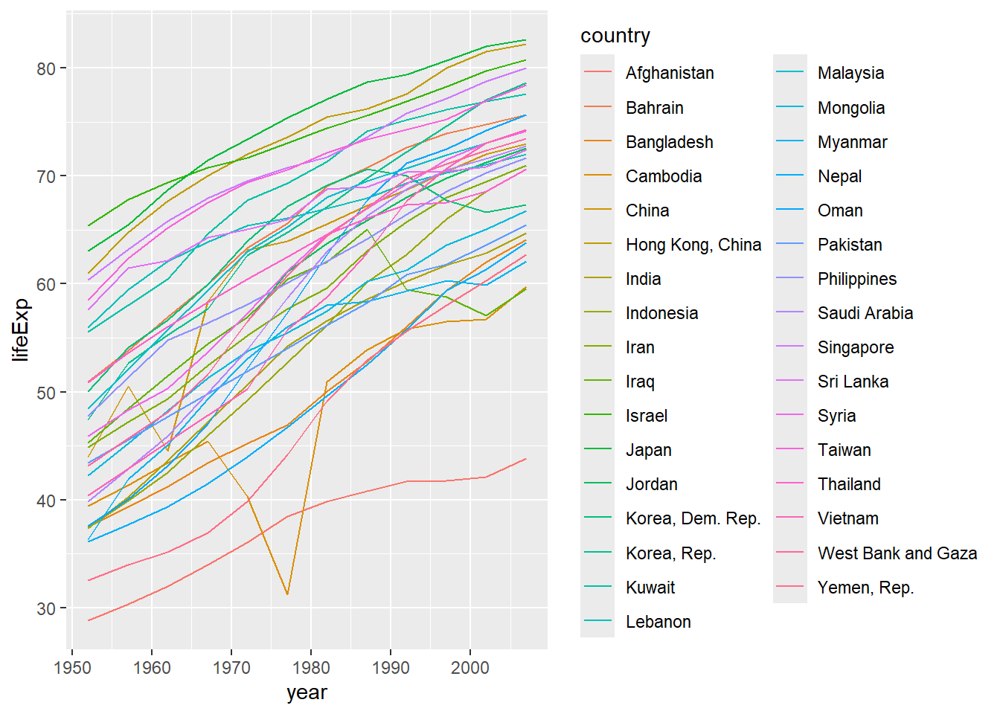
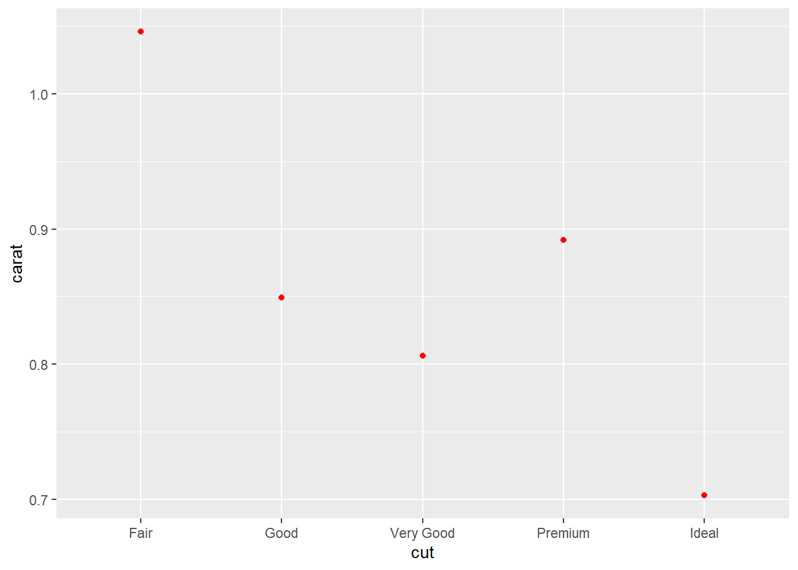
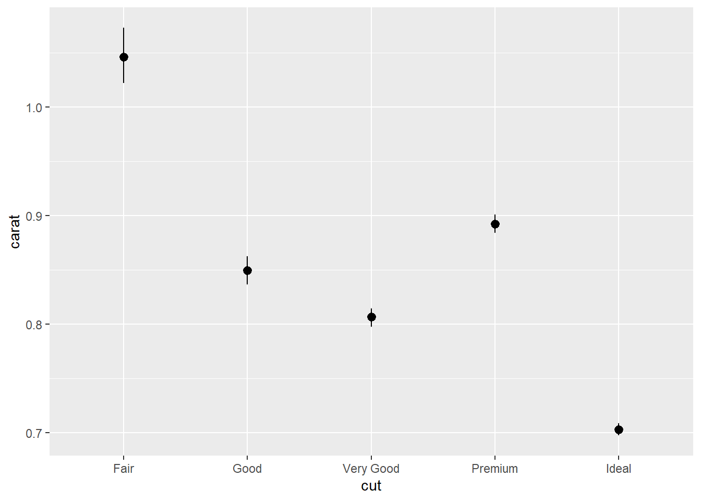
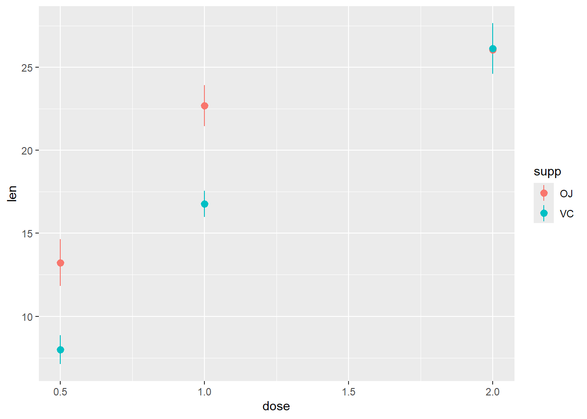
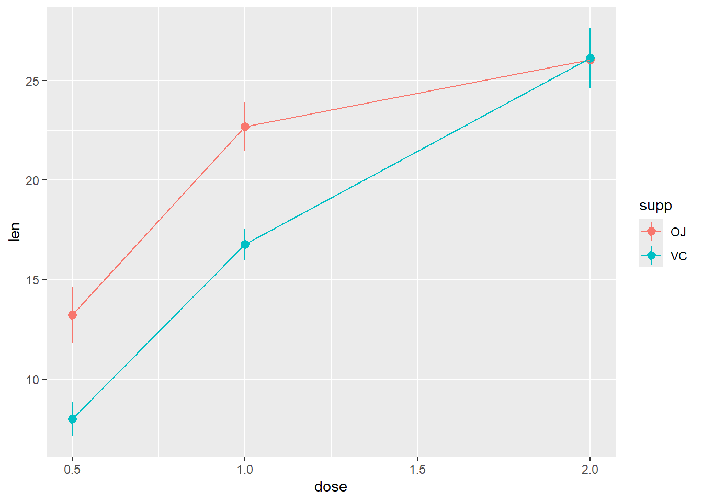
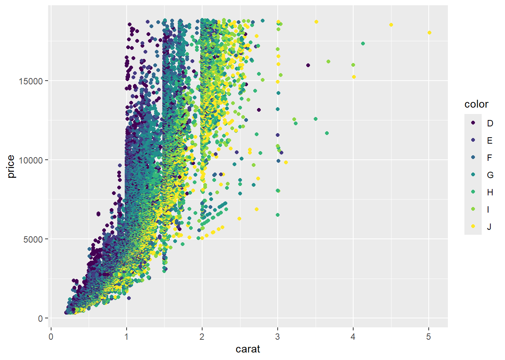
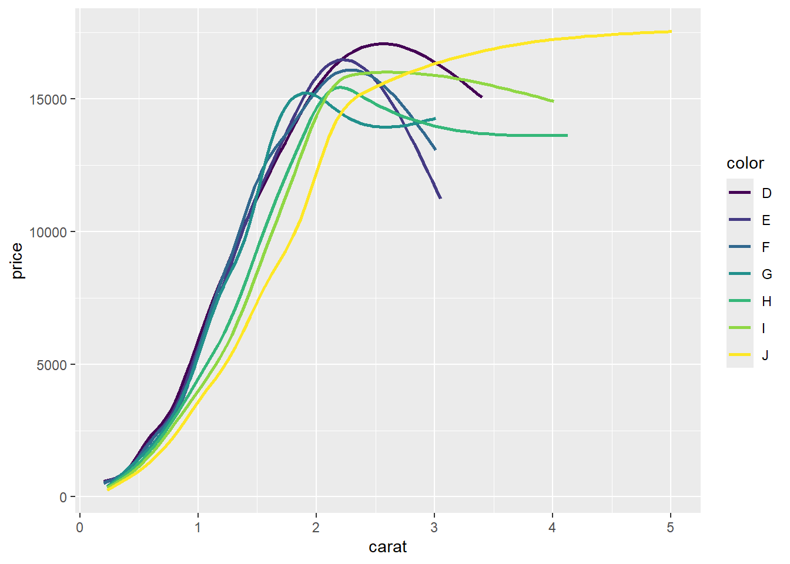

library(tidyverse)
library(skimr)
library(viridis)Visualising Qualitative Data
Packages
Data
data(diamonds)
skimr::skim(diamonds)| Name | diamonds |
| Number of rows | 53940 |
| Number of columns | 10 |
| _______________________ | |
| Column type frequency: | |
| factor | 3 |
| numeric | 7 |
| ________________________ | |
| Group variables | None |
Variable type: factor
| skim_variable | n_missing | complete_rate | ordered | n_unique | top_counts |
|---|---|---|---|---|---|
| cut | 0 | 1 | TRUE | 5 | Ide: 21551, Pre: 13791, Ver: 12082, Goo: 4906 |
| color | 0 | 1 | TRUE | 7 | G: 11292, E: 9797, F: 9542, H: 8304 |
| clarity | 0 | 1 | TRUE | 8 | SI1: 13065, VS2: 12258, SI2: 9194, VS1: 8171 |
Variable type: numeric
| skim_variable | n_missing | complete_rate | mean | sd | p0 | p25 | p50 | p75 | p100 | hist |
|---|---|---|---|---|---|---|---|---|---|---|
| carat | 0 | 1 | 0.80 | 0.47 | 0.2 | 0.40 | 0.70 | 1.04 | 5.01 | ▇▂▁▁▁ |
| depth | 0 | 1 | 61.75 | 1.43 | 43.0 | 61.00 | 61.80 | 62.50 | 79.00 | ▁▁▇▁▁ |
| table | 0 | 1 | 57.46 | 2.23 | 43.0 | 56.00 | 57.00 | 59.00 | 95.00 | ▁▇▁▁▁ |
| price | 0 | 1 | 3932.80 | 3989.44 | 326.0 | 950.00 | 2401.00 | 5324.25 | 18823.00 | ▇▂▁▁▁ |
| x | 0 | 1 | 5.73 | 1.12 | 0.0 | 4.71 | 5.70 | 6.54 | 10.74 | ▁▁▇▃▁ |
| y | 0 | 1 | 5.73 | 1.14 | 0.0 | 4.72 | 5.71 | 6.54 | 58.90 | ▇▁▁▁▁ |
| z | 0 | 1 | 3.54 | 0.71 | 0.0 | 2.91 | 3.53 | 4.04 | 31.80 | ▇▁▁▁▁ |
Univariate Visualisations
Common Code
p1 <- ggplot(data=diamonds, aes(x=cut))Bar chart: Counts
p1 + geom_bar()
Add color
p1 + geom_bar(fill="forestgreen")Add title
Add sequential colour theme
p1 + geom_bar(aes(fill=cut))+
scale_fill_viridis_d() +
labs(title="Composition of diamonds by cuts")Change color pallet
p1 + geom_bar(aes(fill=cut))+
scale_fill_viridis_d(option = "magma") +
labs(title="Composition of diamonds by cuts")Manually fill colors
p1 + geom_bar(aes(fill=cut))+
scale_fill_manual(<>) +
labs(title="Composition of diamonds by cuts")Bar charts: percentages
Method 1: geom_col
diamonds |>
summarize(prop = n() / nrow(diamonds), .by = cut) # A tibble: 5 × 2
cut prop
<ord> <dbl>
1 Ideal 0.400
2 Premium 0.256
3 Good 0.0910
4 Very Good 0.224
5 Fair 0.0298diamonds |>
summarize(prop = n() / nrow(diamonds), .by = cut) |>
mutate(cut = forcats::fct_reorder(cut, prop))# A tibble: 5 × 2
cut prop
<ord> <dbl>
1 Ideal 0.400
2 Premium 0.256
3 Good 0.0910
4 Very Good 0.224
5 Fair 0.0298diamonds |>
summarize(prop = n() / nrow(diamonds), .by = cut) |>
mutate(cut = forcats::fct_reorder(cut, prop)) |>
ggplot(aes(y=prop, x=cut)) +
geom_col()
Method 2: geom_bar and after_stat
ggplot(diamonds, aes(x = cut, y = after_stat(count / sum(count)))) +
geom_bar()Flip coords
ggplot(diamonds, aes(x = cut, y = after_stat(count / sum(count)))) +
geom_bar() +
coord_flip()Obtain percentage
ggplot(diamonds, aes(x = cut, y = after_stat(count / sum(count)*100))) +
geom_bar() +
coord_flip()Level-up-your plots
diamonds |>
summarize(prop = n() / nrow(diamonds), .by = cut) |>
mutate(cut = forcats::fct_reorder(cut, prop)) |>
ggplot(aes(prop, cut)) +
geom_col() +
scale_x_continuous(
expand = c(0, 0), limits = c(0, .50),
labels = scales::label_percent(),
name = "Percentage"
) More work on the plot
diamonds |>
summarize(prop = n() / nrow(diamonds), .by = cut) |>
mutate(cut = forcats::fct_reorder(cut, prop)) |>
ggplot(aes(prop, cut)) +
geom_col() +
scale_x_continuous(
expand = c(0, 0), limits = c(0, .5),
labels = scales::label_percent(),
name = "Percentage"
) + theme(axis.title.y = element_blank())diamonds |>
summarize(prop = n() / nrow(diamonds), .by = cut) |>
mutate(cut = forcats::fct_reorder(cut, prop)) |>
ggplot(aes(prop, cut)) +
geom_col() +
geom_text(
aes(label = paste0(" ", sprintf("%2.1f", prop * 100), "% ")),
position = position_dodge(width = .9), # move to center of bars
hjust = -0.1, # nudge above top of bar
size = 3)+
scale_x_continuous(
expand = c(0, 0), limits = c(0, .5),
labels = scales::label_percent(),
name = "Percentage"
) + theme(axis.title.y = element_blank())Bi-variate
Stacked bar chart
Encoding by colour
Position: stack
b1 <- ggplot(data=diamonds, aes(x=cut, fill=color))R code:___________

Grouped bar chart/ Cluster bar chart
This chart displays bars for multiple categories grouped together side by side.
Encoding by colour
Position: dodge
R code:___________
Small Multiples or Trellis Chart
This chart displays multiple small bar charts, each representing a different subset of the data.
Encoding by position
ggplot(data=diamonds, aes(x=color))+geom_bar()+facet_wrap(~cut)Your turn: What is the best chart: grouped bar chart, stack bar chart or faceting?
Percentage stacked bar chart

Categorical vs Quantitative
Cleveland dot chart
This is useful when you have large number of categories.
Representation using bar chart
Question: What is the best representation? Dot chart or Bar chart?
Heat map
Geospatial visualisation: Good to identify “hot spots”.

ggplot(gapminderAsia, aes(x=year, fill=lifeExp, y=country))+
geom_raster()+
scale_fill_viridis_c()ggplot(gapminderAsia, aes(x=year, fill=lifeExp, y=reorder(country, lifeExp)))+
geom_raster()+
scale_fill_viridis_c()Plotting summary statistics
Plotting Summary statistics: Method 1
Calculate summary statistics before plotting.
R code:___________________
# A tibble: 5 × 2
cut mean_carat
<ord> <dbl>
1 Fair 1.05
2 Good 0.849
3 Very Good 0.806
4 Premium 0.892
5 Ideal 0.703R Code:________________
Plotting summary statistics: Method 2 - with stat_summary
Common code
g1 <- ggplot(diamonds, aes(x = cut, y = carat)) Plot mean values.
g1+
stat_summary(fun.y = "mean", geom="point", color="red")
Your turn: Plot mean and median.
R code:___________________
R code:___________________
mean_se: mean and standard error
R code:___________________
mean_cl_normal: 95 per cent confidence interval assuming normality. (Use library(Hmisc))
library(Hmisc)
g1+stat_summary(fun.data = "mean_cl_normal")R code:___________________
mean_cl_boot: Bootstrap confidence interval (95%)

Confidence limits provide us a better idea than standard error limits of whether two means would be deemed statistically different.
Design of Experiments
Description
The response is the length of odontoblasts (cells responsible for tooth growth) in 60 guinea pigs. Each animal received one of three dose levels of vitamin C (0.5, 1, and 2 mg/day) by one of two delivery methods, orange juice or ascorbic acid (a form of vitamin C and coded as VC).
| Name | ToothGrowth |
| Number of rows | 60 |
| Number of columns | 3 |
| _______________________ | |
| Column type frequency: | |
| factor | 1 |
| numeric | 2 |
| ________________________ | |
| Group variables | None |
Variable type: factor
| skim_variable | n_missing | complete_rate | ordered | n_unique | top_counts |
|---|---|---|---|---|---|
| supp | 0 | 1 | FALSE | 2 | OJ: 30, VC: 30 |
Variable type: numeric
| skim_variable | n_missing | complete_rate | mean | sd | p0 | p25 | p50 | p75 | p100 | hist |
|---|---|---|---|---|---|---|---|---|---|---|
| len | 0 | 1 | 18.81 | 7.65 | 4.2 | 13.07 | 19.25 | 25.27 | 33.9 | ▅▃▅▇▂ |
| dose | 0 | 1 | 1.17 | 0.63 | 0.5 | 0.50 | 1.00 | 2.00 | 2.0 | ▇▇▁▁▇ |
len supp dose
1 4.2 VC 0.5
2 11.5 VC 0.5
3 7.3 VC 0.5
4 5.8 VC 0.5
5 6.4 VC 0.5
6 10.0 VC 0.5R code:___________________

R code:___________________

R code:____________________
Avoid overlapping in the last category position_dodge(0.1)
R code: ___________
Not suitable for this example: Why?
Categorical with two Quantitative variables
R code: ___________

R code: ___________
R code: ___________
R code: ___________

R code: ___________
R code: ___________
Your turn: What is the best chart to visualize the relationship between the price, carat, and color of diamonds?